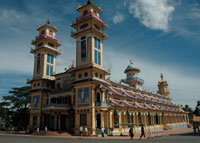

Comparative Cultures in Asia for Marketing and MBA students: Vietnam and Bali. Spring Session: May 11th-May 30th 2009
Two courses in Vietnam and Bali are designed for Marketing or MBA students who would like to work in Asian markets, to study Asian culture, history and business environment for their marketing activities. These short, intensive courses are offered in the Spring Session of 2009. The Vietnam course is held in Hanoi for three weeks in May and the Bali course in Marga, Central Bali in June. Both courses include 39 hours of instruction and comprise 31 formal study hours, and 8 hours of working seminars by Vietnamese and Balinese English speaking Professors, highly qualified in their field. No prior knowledge of Vietnamese or Balinese history and culture is assumed when enrolling for the courses. A reading list provided upon registration will prepare students adequately for the course and travel.
Course in Vietnam
(Starting 2009)
Program introduction:
This is a joint program between a reputable University in Vietnam, selected by Asia Study Tours Corporation and a Canadian Post-Secondary Institution. This program is designed for the student to apply the knowledge of International Marketing, International Business, and International Economics in the real-world cases in Vietnam through lectures and relevant activities. This cross-cultural experience will provide business students with an international working environment, while learning how to overcome cultural barriers. This knowledge and cultural understanding can enhance their opportunities in future dealings in Asia.
Participants: Will consist of a mixed group of approx. 20 students from a Canadian University or College and 10 students from a Vietnamese University.
Course List:
Canadian Professors will teach the following:
- International Business
- International Marketing
- International Financial Management
Vietnamese Professors will teach the following:
- Vietnamese Culture in Business
- Doing business in Vietnam: Politics, Law, and the Economy
Activities Include:
- Lectures
- Group work
- Company visits in the fields of: Information Technology; Textile/garment; Food processing; FDI companies/factories; commercial banking/financial institutions
- Institutions: Canadian Chamber of Commerce; Vietnam Chamber of Commerce
Comparative Cultures in Asia: Course in Bali – Spring Session: June 1st to June 14th 2009
“A STUDY OF VILLAGE LIFE IN RURAL BALI”
Two week program: groups of 8 -15 Students
Course objectives:
To provide students with the opportunity to experience the dynamics of the unique culture of Bali through field visits, first hand observation and participation. The program involves some of the Bali’s most notable scholars and artists. The home stay in Marga adds an essential dimension to facilitate learning about village life. Mr. Tisna, the program coordinator, is a Balinese environmentalist, educational leader, and writer. The major theme of study will be “Balancing two worlds: the traditional and the modern”.
Course description:
Bali today is sailing amidst the treacherous currents of international politics and globalization, trying to stay afloat balancing the two worlds, the traditional, and the modern. The traditional world of Bali is a communal agrarian world of families and extended families and of rituals and magic—the unseen gods, spirits, and ancestors whom the Balinese perceive as having direct influences in their daily life. A world operating under the guidance of sacred texts and spirit communions interpreted and conducted by religious authorities—the temple priests and high priests, the spirit mediums and healers—who are believed by the people to mediate the unseen world. The Balinese world is situated around networks of water—lakes, rivers, and weirs for agriculture, with careful consideration of the delicate balance of nature. It is a highly intuitive world, where living in the present, one day at a time, is of essence. The modern world of Bali, in sharp contrast, is one of international tourism, trade, and globalization. Students will examine how the Balinese deal with these two conflicting worlds by examining the social, economic, cultural, and spiritual fabric of Balinese culture. |
 |